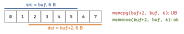
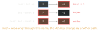
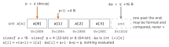
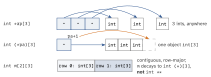
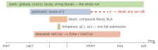

c · folio
In one line: A pointer is an address plus a type (the step of p+1, the type of
*p) plus one object it may reach — only inside that object, only while it lives.
Read a declaration from the name outward: right first ([], ()), then
left (*, qualifiers). const binds to what is on its left (if nothing, its right).
restrict promises that data modified through the pointer has no other path.
Download PDF Print view LaTeX source

Reading declarations
| declaration | reads as · allowed |
|---|---|
const int *p = int const *p | ptr to const int · p++ ok, *p=1 error |
int *const p | const ptr to int · *p=1 ok, p++ error |
const int *const p | neither moves nor writes |
volatile uint32_t *const r | fixed pointer to a register that changes by itself |
int **pp | ptr to ptr — a callee can reseat your pointer |
int *a[5] | array of 5 pointers to int |
int (*a)[5] | pointer to an array of 5 int · a+1 skips 5 ints |
int *f(void) | function returning int * |
int (*f)(void) | pointer to function returning int |
int (*fa[3])(int *, int *) | array of 3 pointers to functions |
void (*signal(int, void (*)(int)))(int) | takes (int, handler), returns the previous handler |
typeof(int (void)) *f | C23 typeof: int (*f)(void), read left to right |
void g(int a[static 4]) | caller passes ≥4 elements (so not null) |
void g(int a[const]) | parameter is int *const a |
int *p, q; | q is an int: * belongs to the declarator |
const and the conversions
T *→const T *is implicit; back needs a cast (-Wcast-qualwarns). Writing through it is UB only if the object was defined const (or is a string literal).char **→const char **is a constraint violation: otherwise*cpp = &c; *p = 0;would write theconst char c.void *↔ any object pointer, implicitly; the round trip compares equal. GCC 14+: any other implicit pointer mismatch is an error (-Wincompatible-pointer-types).constis neither ROM nor a constant: a non-volatile const object may sit in read-only memory; at block scopeconst int n = 4; int a[n];is a VLA. C23constexpr int n = 4;is a constant; aconstexprpointer can only be null.- C23:
strchr strrchr strpbrk strstr memchr bsearchare generic — aconstargument gives aconstresult, sochar *p = strchr(cs, 'x');now needs a diagnostic. An array and its elements are identically qualified, sofloat m[n][n]passes to aconst float m[n][n]parameter. - A string literal is
char[N], notconst, yetchar *s = "hi"; s[0] = 'H';is UB.-Wwrite-stringstypes itconst char[N];char s[] = "hi";is a copy.
Function pointers + void *ctx
typedef void (*event_cb)(uint8_t evt, void *ctx);
typedef struct { event_cb cb; void *ctx; } listener;
static void on_evt(uint8_t evt, void *ctx) {
struct counter *c = ctx; // void * -> T *: no cast in C
c->n++; // fn + state = C's closure
}
static struct counter clicks; // ctx must OUTLIVE l
listener l = { on_evt, &clicks }; // &on_evt: same value
l.cb(EVT_PRESS, l.ctx); // = (*l.cb)(...) = (**l.cb)(...)
const event_cb table[] = { [EVT_A] = on_a, [EVT_B] = on_b };- A function name decays like an array;
*fpis a designator again, so any number of*still calls. - Casting between function-pointer types and back is fine; calling through an incompatible type is UB — e.g.
int cmp(const int *, const int *)cast forqsort. Writecmp(const void *, const void *), convert inside. - Function pointer ↔
void *: not ISO C; POSIX requires it fordlsym. - C23:
int (*fp)()means(void)— unprototyped functions are gone. - Library fn + ctx:
thrd_create(&t, fn, arg),fnisint (*)(void *);qsort,atexittake none. POSIX.1-2024qsort_r(b, n, sz, cmp, arg),cmp(a, b, arg)= glibc, FreeBSD 14+; macOS keepsqsort_r(b, n, sz, thunk, cmp),cmp(thunk, a, b).
restrict — the only path
int f(int *a, int *b)
{ *a = 1; *b = 2; return *a; } // reload *a: b may == a
int g(int *restrict a, int *restrict b)
{ *a = 1; *b = 2; return *a; } // may just return 1- Promise per block: an object modified via
pis accessed only viap(or pointers based on it). Read-only overlap is fine:h(n, a, b, b)doingp[i] = q[i] + r[i]. Copy loopf(n, p, q):f(50, d+50, d)ok,f(50, d+1, d)UB. - Broken promise = UB, no diagnostic required (
-Wrestrict, in-Wall, sees visible overlaps). A compiler may ignorerestrict; deleting every one never changes a correct program. Gain: dependence analysis from the declarations alone. - Only on pointers to object types.
f(int *restrict p)andf(int *p)are compatible declarations. Restricted-to-restricted assignment: outer block → inner only. memcpy,memccpy,strcpy,strncpytakerestrict: overlap is UB;memmovecopies as if via a temporary array. Not a C++ keyword: G++ spells it__restrict__.

Which part is read-only?

Decay, arithmetic, sizeof

- Decay to
&a[0]happens everywhere except undersizeof,typeof, unary&, and a string literal initialising an array. - Parameter
int a[10]isint *a:sizeof a / sizeof a[0]gives pointer size / element size (GCC warns by default). Pass the length:(size_t n, int a[n])documents it;int (*m)[n]keeps a row size. p ± nmovesn * sizeof *pbytes and must stay in the array or one past — forming any other address is UB, dereferenced or not.q - p:ptrdiff_telements, same array only.< >only within one object (later member = greater);==across objects is fine.void *arithmetic is a constraint violation (incomplete type); GCC treats the size as 1 (-Wpointer-arithwarns).&a[4] == &b[0]may be true whenbfollowsa— still no way intob. A pointer carries its object: provenance, specified by ISO/IEC TS 6010:2025.
Array of pointers · pointer to array · 2-D

Null pointers
- Null pointer constant:
0,(void *)0, or C23nullptr(typenullptr_t, size ofchar *).NULLis implementation-defined — may be plain0, wrong as a variadic pointer argument;nullptrmay be read withva_arg(ap, char *). *pis UB for null, misaligned or dead targets. Converting to a misaligneduint32_t *is UB already, before any read —memcpythe bytes.- C23:
memcpy(d, NULL, 0)is UB — null is an invalid library argument even for length 0. C2y (N3322; GCC 15-std=c2y) defines it,NULL + 0,NULL - NULL.
Lifetime — dangling pointers

- Once the object dies, every use of the pointer value is UB —
if (p == q)afterfree(p)too; its bits are indeterminate. GCC-Wuse-after-free=2and-Wdangling-pointer=2are in-Wall; ASan finds use-after-free, -return, -scope. char buf[32]; return buf;(GCC warns by default). Fix: caller’s buffer + size,static(not re-entrant) ormalloc(caller frees).{ p = (int[]){1, 2}; }dangles after the brace; C23(static int[]){1, 2}lives for the whole run.free(p); p = NULL;—free(NULL)does nothing, a secondfreeis UB.reallocmay move: every old and interior pointer dangles. On failure it returns null and keeps the old block, sop = realloc(p, n)leaks — use a temporary. C23:realloc(p, 0)is UB (was implementation-defined).- A
ctxpointing into a stack frame, registered with something that outlives the frame, dangles on the first event.